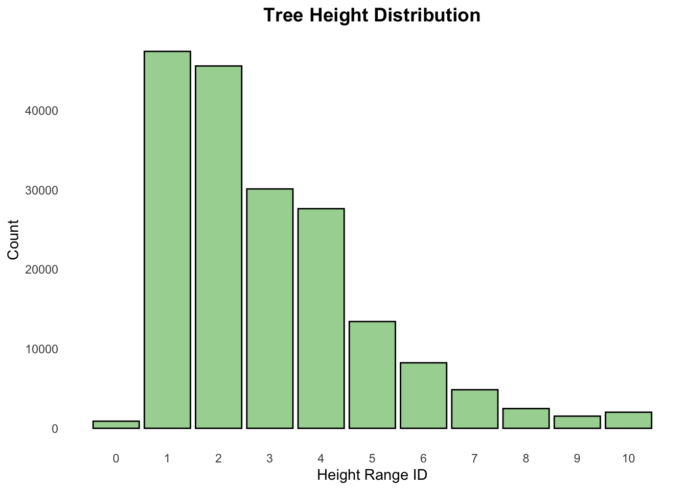
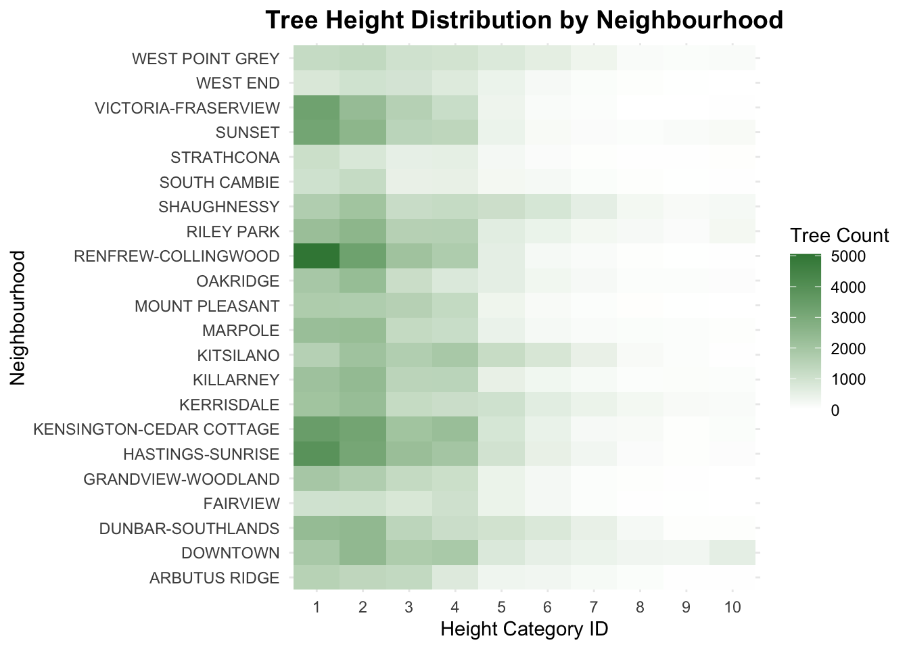
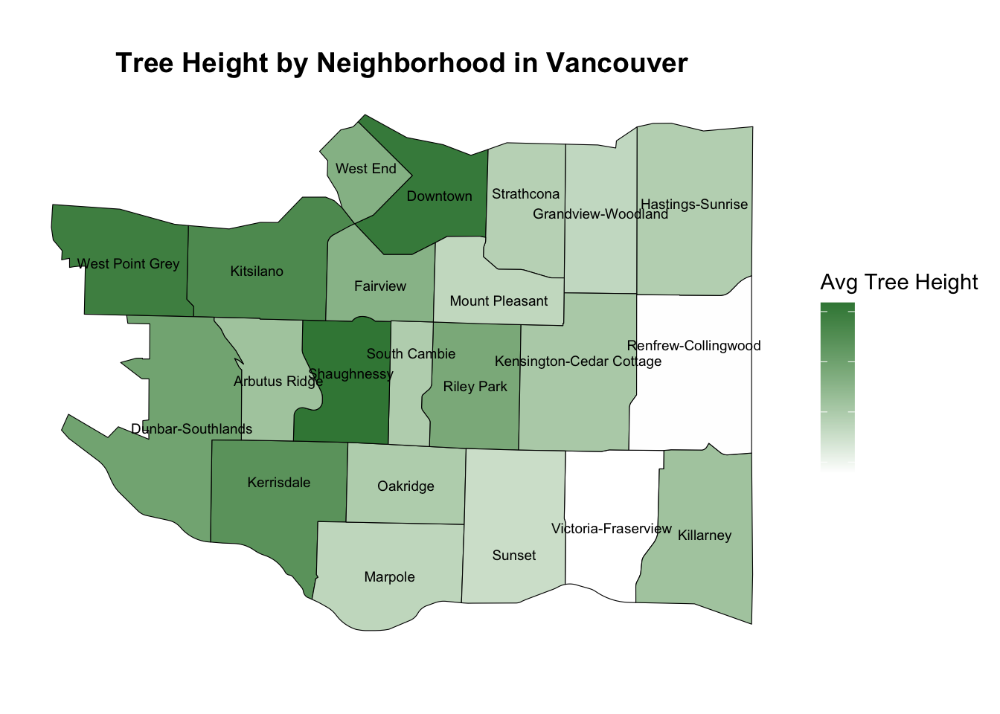
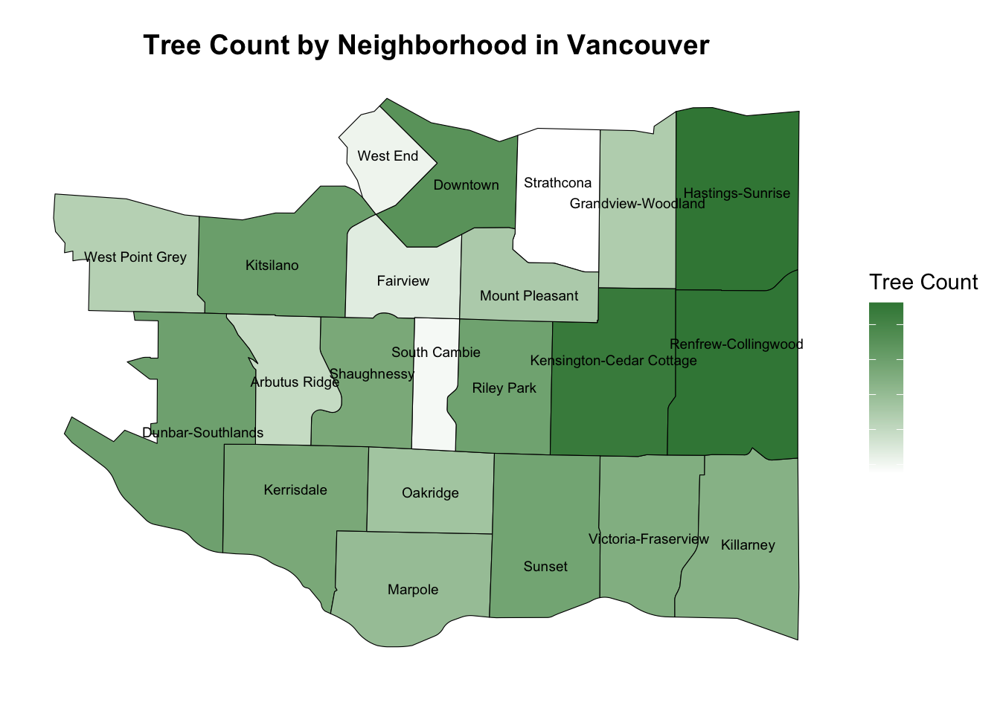

A Practical Guide to EDA: Analyzing Vancouver’s Tree Heights
Data Science
Analysis
Author
Jessie Zhang
Published
January 15, 2025
Word Count: 1460 Estimated Reading Time: 12 minute(s)
If you are interested in pursuing a career in data science, Exploratory Data Analysis (EDA) is one of the most critical skills you’ll rely on in virtually every data analysis project. Think of EDA as the foundation of your analysis, it’s where you familiarize yourself with your data, uncover patterns, and set the stage for meaningful insights.
In this blog, let’s dive into how to implement EDA effectively using an example from a project about Vancouver Tree Height Geography Analysis, where we explored variations in tree heights across the city’s neighborhoods. Whether you’re analyzing trees, customer behavior, or healthcare data, the lessons from this project apply universally to all aspiring data professionals.
What is EDA and Why is it Important?
Exploratory Data Analysis (EDA) is an important step in any data science workflow. It’s where you explore and know important characteristics of your dataset. Skipping this step or performing it poorly can lead to misguided conclusions and wasted efforts.
Specifically, EDA can help you (but not limited to):
Understand Your Dataset: Learn about the size, structure, and key features of the data. You can also identify missing or duplicate values to examine the quality of dataset.
Spot Trends and Anomalies: Identify distributions and patterns, clusters, or unexpected values outliers that may require extra attention.
Shape Your Analysis: Discover the relationship between variables and refine your questions based on your initial analysis. Determine the most promising directions for further exploration.
In our Vancouver Tree Project, the EDA step allowed us to explore tree height distributions across neighborhoods and informed our approach to testing whether these variations were significant. Now, let’s explore the magic of EDA step by step!
Important Note: Although EDA usually is the first step in the analysis, an effective data analysis workflow is not linear and may involve consistently exploring the data at many points of your analysis path.
Steps for Effective EDA
1. Start with a Clear Objective
Every great EDA begins with a specific question or goal, so you should firstly formulate your question. For exmaple, in our Vancouver Tree project, the research question was: Do tree heights vary significantly from neighborhood to neighborhood in Vancouver? This focus ensured our analysis was targeted and all the findings should be relevant.
Important Note: Define your objective early and use it as a guide throughout the EDA process. This prevents you from getting sidetracked by unrelated patterns.
2. Load and Read Your Data
Before analyzing anything, start by understanding the structure and quality of the dataset, so that we can gain an overview of the data and identify the columns of interest.
Here’s what we did for our project:
Load and Preview the Dataset: Use simple commands like head() in R to get a quick snapshot of the data. For our project, we observed that the dataset included various properties of each tree in Vancouver, such as its location, category, planting information, and other characteristics.
Dataset: City of Vancouver Open Data Portal (2022)
Check Data Structure: We should take a look at the size of the dataset, and also the variable types using command str() in R. For simplicity, we are going to only focus on the 4 columns that highly related to our research questions, which are TREE_ID, NEIGHBOURHOOD_NAME, HEIGHT_RANGE_ID, and HEIGHT_RANGE. And since there is a one-to-one correspondence between levels of HEIGHT_RANGE and HEIGHT_RANGE_ID. we can confidently use HEIGHT_RANGE_ID as a numeric representation for further analysis, ensuring consistency and simplicity in our approach.
Identify Missing or Duplicate Values: To ensure data quality, we checked for gaps or duplicates that might require attention. Specifically, we examined the TREE_ID column, as it serves as the unique identifier for each tree. Based on our analysis, the dataset is relatively tidy, with no missing or duplicate records detected.
Important Note: In the real world, many datasets are far from tidy, unlike our tree_data. Dirty data can easily distort analysis and lead to misleading conclusions, undermining the validity of your findings. While data cleaning might not be the most exciting part of the process, it is absolutely essential. Investing time in thoroughly cleaning your dataset ensures that your analysis is both accurate and reliable, providing a strong foundation for meaningful insights.
3. Use Visualizations to Uncover Trends and Anomalies
Visualization is a powerful tool in EDA, enabling you to uncover trends, anomalies, and relationships that may not be apparent in raw data. The choice of plot depends on the characteristics of your dataset. For example, bar plots are excellent for visualizing the counts of categorical variables, while boxplots or violin plots effectively display the distribution of continuous variables. For more advanced analysis, scatter plot matrices (or pair plots) can help you explore pairwise relationships between multiple variables, providing deeper insights into potential correlations and patterns.
Specifically for our project, we used:
Bar Charts: To explore the count of tree height distributions and identify potential outliers, we observed that trees in the height range of 0–10 ft are very few. This anomaly may be due to these trees being recently planted, and thus not representative of mature trees in the dataset. To ensure more accurate analysis and meaningful insights, it may be prudent to exclude trees in this height range from further analysis.

Heatmaps: Heatmaps are a powerful way to visualize spatial variations in tree height across Vancouver’s neighborhoods. From the heatmap, we observed that the most common tree height range in most neighborhoods falls between 1 and 3 units. On the other hand, taller trees (height ranges 6-10 units) are scarce and, in many cases, entirely absent, highlighting potential disparities in tree growth or planting strategies across the city.

Advanced Mapping: To enhance the visual appeal and provide deeper insights, we mapped both the average tree heights and tree counts across Vancouver neighborhoods using the Vancouver map dataset (City of Vancouver Open Data Portal (2023)). These advanced visualizations offer a clear geographic perspective, revealing notable differences in both tree heights and counts across neighborhoods.


4. Draw Initial Conclusions and Prove Them
Every observation can spark new questions and guide deeper analysis, so we may need multiple plots to draw more reliable conclusions from EDA. However, while visually identifiable patterns provide valuable insights, validating these observations statistically is essential. In our case, although tree height patterns across neighborhoods were apparent, determining whether these differences were statistically significant required an appropriate hypothesis test. In the real world, this step ensures that decisions and strategies are based on sound evidence, minimizing the risk of misinterpretation or bias.
Tip: Stay curious and let your findings inspire further exploration, but always ground your conclusions in evidence and stay aligned with your original objectives.
5. Acknowledge Limitations
No dataset is perfect, and it is important to recognize the limitations of your analysis to ensure your audience interprets the findings accurately and understands the context.
For our project, key limitations included:
Categorical Data: Tree heights were grouped into ranges (e.g., 10–20 ft), which reduced precision and prevented analysis of specific height variations within these ranges.
Sampling Bias: The dataset only included trees recorded by the City of Vancouver, potentially excluding trees in private properties or unregistered areas, leading to incomplete coverage.
Important Note: Acknowledging limitations not only builds trust with your audience but also encourages more informed decision-making.
Key Challenges and Solutions in EDA
To summarize, based on the steps we implemented in our Vancouver tree project, here are the key challenges and how to address them:
Challenge 1: Missing Data
Problem: Missing values can skew results or lead to biased conclusions if not addressed properly. Solution: Employ strategies like imputation, exclusion, or sensitivity analysis tailored to the context of your data and research goals. Always document how missing data was handled to ensure transparency.
Challenge 2: Overinterpretation
Problem: Patterns observed during EDA may appear significant but could be random or misleading. Solution: Approach EDA as an exploratory phase and validate insights with rigorous statistical methods or input from domain experts to avoid overinterpretation.
Challenge 3: Staying Focused
Problem: The exploratory nature of EDA can lead to distraction by irrelevant but interesting patterns. Solution: Continuously align your analysis with the primary research question or objective. Use a clear roadmap or checklist to stay on track without disregarding potential future avenues of exploration.
At the End: EDA is the Foundation for Successful Data Analysis
Exploratory Data Analysis (EDA) forms the foundation for everything that follows in a data science workflow. Whether analyzing tree data in Vancouver or studying customer behaviors in e-commerce, EDA equips you with the tools to understand your data, refine your questions, and make informed decisions.
For aspiring data scientists/analysts, mastering the EDA process is an essential first step. A strong EDA approach ensures your projects are grounded in clarity and insight, setting the stage for success in every analysis. Let the story of Vancouver’s trees inspire you to uncover patterns and dive deeper into your own datasets!